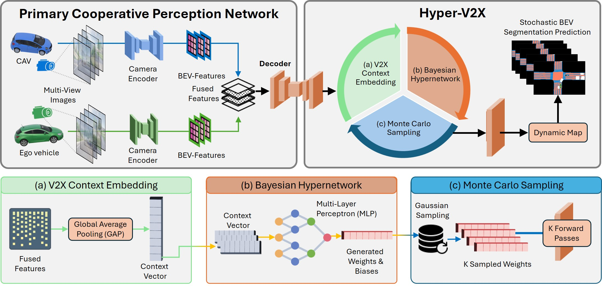
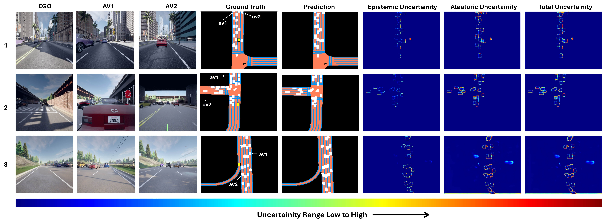

Cooperative perception enabled by Vehicle-to-Everything (V2X) communication enhances autonomous driving safety by creating a unified environmental representation through shared sensory data. While recent works have advanced multi-agent fusion for improved perception, uncertainty quantification in such cooperative frameworks remains largely unexplored. This paper introduces Hyper-V2X, a hypernetwork-based framework for estimating both epistemic and aleatoric uncertainties in V2X-based perception. Specifically, we propose a partial weight generation scheme and V2X context embedding module that conditions a Bayesian hypernetwork on fused multi-agent features to generate weight distributions for stochastic Bird's-Eye-View (BEV) segmentation. Unlike existing deterministic BEV models, Hyper-V2X enables efficient uncertainty estimation with little computation overhead. Our approach is architecture-agnostic, and can be seamlessly integrated with modern cooperative backbones such as CoBEVT. Experiments on the OPV2V benchmark demonstrate that Hyper-V2X provides accurate, well-calibrated uncertainty estimates and improves overall perception reliability.

Overview of the proposed Hyper-V2X framework for uncertainty estimation in V2X-based cooperative perception. The Bayesian hypernetwork conditions on fused multi-agent BEV features to generate stochastic decoder weights.

Ground truth, predicted BEV segmentation, and corresponding epistemic and aleatoric uncertainty maps.
High uncertainty concentrates at semantic object boundaries, precisely where geometric irregularities and prediction deviations occur.
Occluded or incomplete regions consistently show elevated uncertainty, reflecting the model's awareness of perceptual ambiguity.
Well-calibrated epistemic and aleatoric uncertainty estimates with minimal computational overhead over deterministic baselines.

As CPR increases from 0 to 64, accurately detected objects gradually disappear — a realistic simulation of bandwidth-constrained V2X communication.
Both epistemic and aleatoric uncertainty maps faithfully track performance degradation, growing higher as bandwidth is reduced.
Enables downstream tasks to appropriately weight or discard unreliable predictions — critical for safe cooperative driving under bandwidth constraints.
@inproceedings{jagtap2025hyperv2x, author = {Jagtap, Abhishek Dinkar and Tiptur Sadashivaiah, Sanath and Festag, Andreas}, title = {Hyper-V2X: Hypernetworks for Estimating Epistemic and Aleatoric Uncertainty in Cooperative Bird's-Eye-View Semantic Segmentation}, booktitle = {IEEE Intelligent Vehicles Symposium (IV)}, year = {2026}, note = {Oral presentation}, url = {https://arxiv.org/abs/2605.21309v1} }